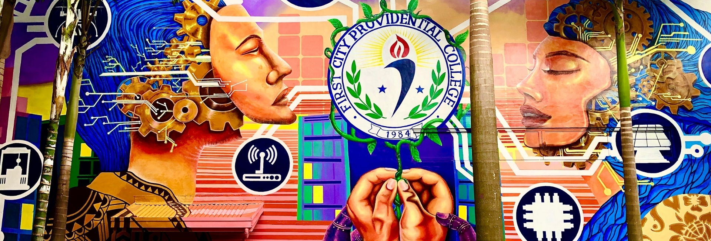

Academic Journey
My Education
A consistent honor student throughout my academic journey, passionate about technology and continuous learning.
 College
College
2024 - Present
Bachelor of Science in Information Technology
New Era University
9 Central Ave, Quezon City, 1107 Metro Manila
GWA: 1.29
President's Lister
TRICE - Finance and Marketing Officer

Senior High School
2022 - 2024
ICT: Computer System Servicing
First City Providential College
Brgy. Narra, Francisco Homes Subd., City of San Jose del Monte, Bulacan
General Average: 98
With Highest Honors
5th Best Research Presenter
TESDA NC II Passer
Junior High School
2018 - 2022
Secondary Education
Minuyan National High School
Curvada, Minuyan, Norzagaray, Bulacan
General Average: 94
With Honors
Champion - Science Quiz Bee (Grade 8)
Elementary
2012 - 2018
Primary Education
Apugan Elementary School
Upper Bigte, Norzagaray, Bulacan
General Average: 92
With Honors
Best in Science Achievement
3rd Place MTAP Challenge (Grade 4)
Notable Achievements
SQL and Relational Databases 101 - Cognitive Class
TESDA NC II Passer - Computer Systems Servicing
Champion - Science Quiz Bee (Grade 8)
5th Best Research Presenter
Best in Science Achievement - Grade 6
3rd Place - Metrobank MTAP DepEd Challenge
Research Project
Assessment of Students' Awareness Towards Computer Ethics
First City Providential College
A comprehensive research project evaluating Grade 12 students' understanding and practice of computer ethics in the digital age.
Evaluated Grade 12 students' awareness of computer ethics
Used descriptive research method to assess ethical computer practices
Highlighted need for integrating ethical education into curricula